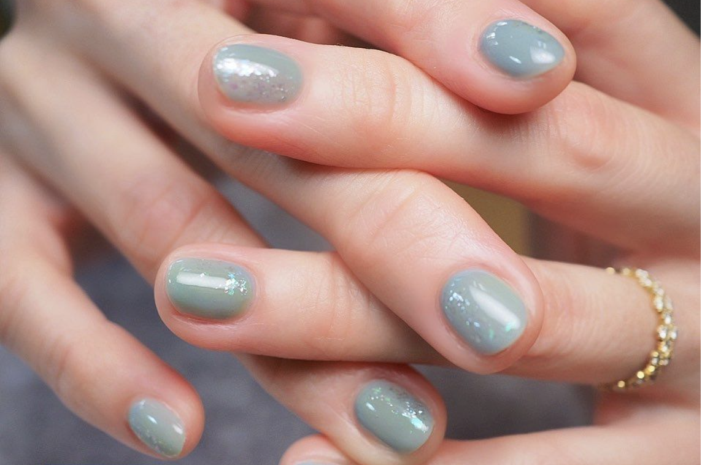
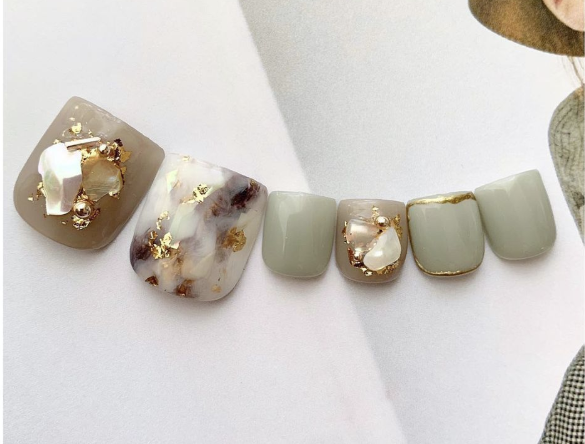
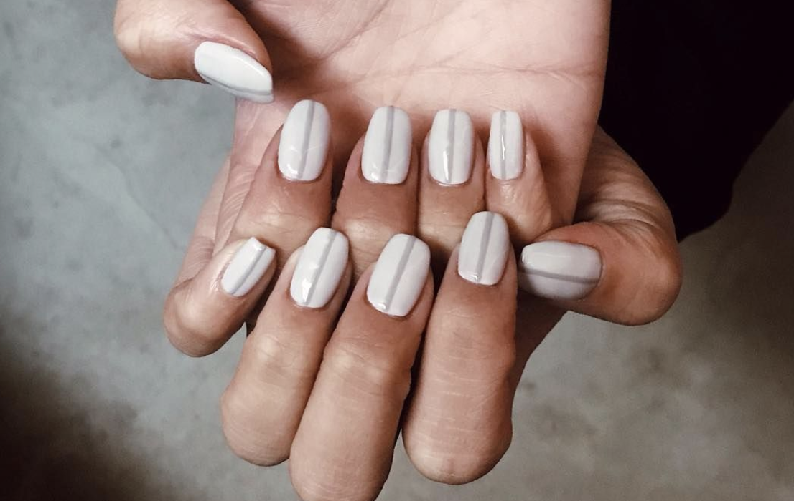

The Moog company pionnered the commercial manufacture of modular voltage-controlled analog synthesizer system in the early 1960s.
| Photo | Description | Price |
|---|---|---|
|  | 方形美甲的特色是指甲兩側都是"方形的直角"。這種形狀適合本身手指長或是甲床有一定寬度的人。它的好處是指甲不易斷裂，很好保養，但因為前端是直角，所以愛穿針織衫的女孩要特別注意，一不小心容易勾到衣服。 | 500 NTD |
|  | 本身如果是短指甲或是愛留短指甲的，很推薦圓形美甲。或是平日工作需要大量運用到指尖的也很推薦它。圓形美甲和方形美甲有點相似，但指甲邊緣沿著本身的指甲走，相對來說更加自然。 | 550 NTD |
|  | 橢圓形美甲是比較女性化的選擇，適合想要視覺上拉長手指的人，但比起圓型美甲，橢圓形的支撐度沒有那麼好，需要特別用心保養呵護。 | 600 NTD |